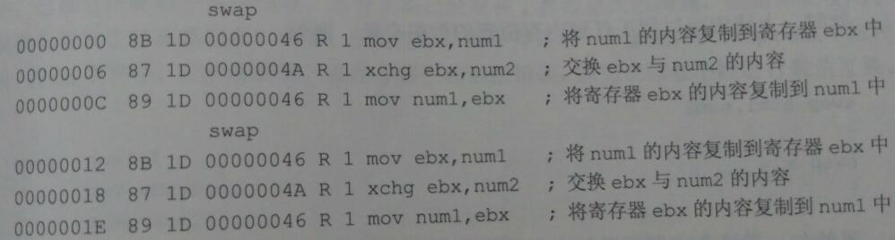
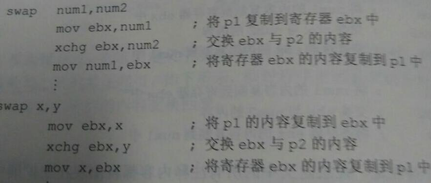
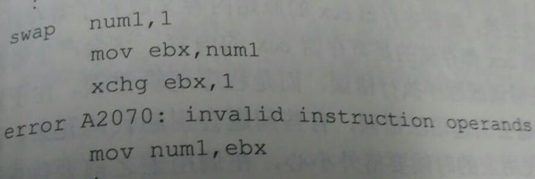

十三 过程
汇编语言的过程可以被理解为方法，过程调用采取如下形式
call pname
pname为过程名，call为调用指令
pname过程的格式为
1 | pname proc |
proc 告知编译程序过程pname的开始，endp告诉编译程序过程pname的结束。ret指令表明何时返回到调用程序中，ret和高级语言return不一样，ret不返回任何值给调用程序。ret是过程中必不可少的调用指令。
举个过程的实例：
1 | sample proc |
如果过程中使用到ecx，eax，ebx, edx等通用寄存器，而不确定外界是否也用到这些通用寄存器，那么在过程中需要将外界用到的寄存器数据保存，可以使用临时变量，也可以使用入栈。譬如ecx数据在调用程序中使用，同时过程mult中也用到ecx，那么使用ecx之前将ecx入栈。
1 | mult proc |
出了过程中明显能从代码中看到一些寄存器会被修改，还有一些指令会导致寄存器数据被修改。
INVOKE指令会导致eax,ecx,edx内容被修改
imul会导致eax,edx被修改。所以可以通过pushad和popad指令保存和恢复这些寄存器的内容
举例
1 | blankln proc |
过程的声明都是放在main主程序之后。而且过程更看重的是节约空间。
十三 宏
1 宏和过程都可以避免编写同样功能代码，宏的速度比过程快，但是倾向于浪费一些空间达到提高效率的目的。
宏的声明放在main函数之前。
宏的结构如下：
mname macro
; 宏体
endm
宏的结构和过程的结构不同，宏内部没有ret，并且macro 表示宏的开始 macro前边为宏的名字。endm为宏的结束，但是endm之前没有宏的名字。另外宏的调用不需要使用call指令，直接写宏的名字即可。可以通过查看汇编列表文件看看宏扩展是什么，以及宏被插入到程序段是什么指令，下面为某段代码调用两次swap宏
展开后：

88 1D 00000046 表示指令mov ebx , num1，该指令在程序地址为00000000处。
另外需要注意的是宏扩展后，注释也会扩展在指令后边。虽然会占用一定内存，但是注释可以帮助程序人员排除逻辑错误。
如果想使用注释，仅仅在宏过程中可见那么采取;;替代;，这样注释不会出现在宏扩展中，用户可以通过宏的声明看到注释。
调用宏的时候，调用几次宏就在相应的调用位置扩展几次，而过程无论调用多少次，仅仅扩展一次。这就是过程节省空间的原因。
另外宏内部尽量不要使用寄存器，如果使用寄存器也不需要保存和恢复寄存器内容，这些操作放在调用宏的程序里，因为保存和恢复操作一则浪费空间，二则会减少宏执行的效率。
2 带参数的宏
1 | swap macro p1, p2 |
p1,p2为宏的参数，可以理解为高级语言宏的两个参数，调用程序调用swap时会将实参替代形参完成宏调用。

调用swap时会用num1替代p1,num2替代p2，
用x替代p1, y替代p2
如果开发人员只传入一个参数怎么办？
比如 swap num1?
这样宏展开就出现问题。可以通过:REQ语句指明参数是必须传入不可缺少的。
1 | swap macro p1:REQ, p2:REQ |
这样要求调用swap必须传入两个参数，缺少参数则提示报错。
考虑这样一个问题，如果调用程序调用swap num1,1怎么办？

xchg ebx,1出错。
另外如果 swap ebx, ebx 怎么办？这种没必要调用swap，虽然调用swap不会出错，
但是造成了空间的浪费。这些问题都可以通过条件汇编解决。
十四 条件汇编
条件汇编和条件指令不同，条件汇编控制编译程序，而不是控制程序的执行，条件汇编根据不同的条件将不同的指令或代码包含到程序中。
条件汇编指令if
if和之前介绍的高级汇编指令.if不一样，if后边的参数为 eq, ne, lt, le, gt, ge, or, and等。
举例：
1 | if num eq 3 |
除此之外
ifb 判断如果为空，则执行if下边的逻辑。
ifnb 判断如果不为空
ifidn 判断如果相同
ifidni 不区分大小写，如果相同
ifdif 如果不相同
ifdifi 不区分大小写，如果不同
这类指令后边要用<参数形式>
举例：
1 | addacc macro parm |
在程序中通过几种方式调用addacc
![4.jpg]
.lst文件内容如下所示，根据不同条件扩展为不同的宏
![5.jpg]
根据不同的条件生成了不同的机器指令，达到了节约空间和控制编译的目的。
仅仅在一部分地址和机器指令行包含了汇编指令，其余没有机器指令和地址的汇编代码不会被包含在程序中。
使用条件汇编将之前的swap设计的更完善
1 | swap macro p1:REQ, p2:REQ |
通过条件汇编，使swap功能更健全和高效。
十五 过程和宏对比和总结
1 过程在被调用的时候只有一份程序副本出现，而宏在被调用的时候，每一次对宏的调用都会出现一次宏代码的副本。
2 过程通常会保存和恢复寄存器的内容，而宏通常不会去保存和恢复寄存器的内容。
3 过程倾向于节省内存空间，而宏倾向于节省运行时间
4 调用过程的时候，使用call指令，后面跟着过程的名字，而调用宏的时候直接写宏的名字。
5 过程中必须包含ret指令，但是宏中一定不能写ret
6 把过程名字放到endp语句之前的标记字段，但是endm之前的标记字段不需要写宏的名字。
7 如果要求调用宏必须传入参数，可在参数后加:REQ
8 条件编译if在使用or或and逻辑时需要将两个参数用括号括起来，如if(x lt 0)or(y gt 1)
我的微信公众号：